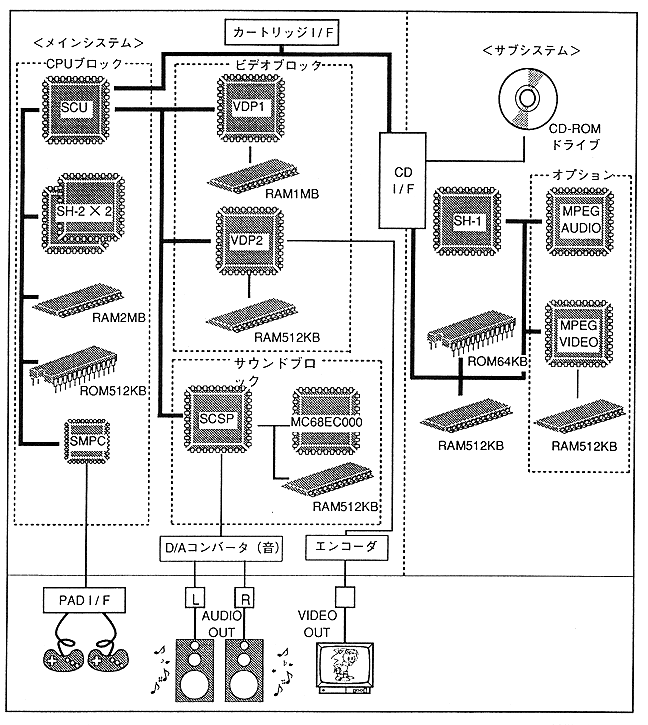

Return to previous page ｜ Return to menu ｜ Go to next page
2.2 System configuration
- The system configuration is equipped with a 32-bit RISC chip (SH-2) with a built-in DSP function in the main unit CPU, greatly improving the computing power (Figure 2.1).
Figure 2.1 Block diagram

Return to previous page ｜ Return to menu ｜ Go to next page